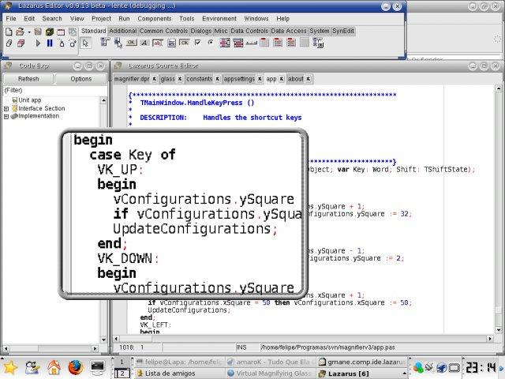
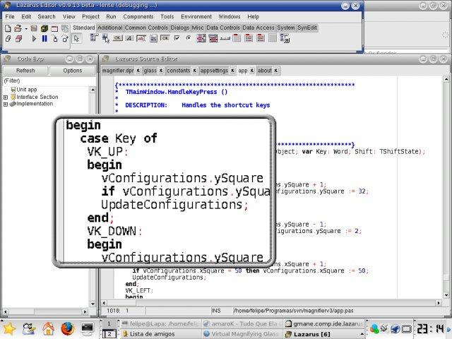

Virtual Magnifying Glass 3.5
A free, open source, screen magnifier, for Windows, Linux, FreeBSD and Mac OS X.
PAGE CONTROLS :
BLUE COLOR SCHEME
| LIGHT TEXT ON DARK
| DARK TEXT ON LIGHT
LANGUAGE :
English
Português
Introduction
| Download
| Getting started
| Shortcut keys
| Support
| Open source
| Resources
Virtual Magnifying Glass is a free, open source, cross-platform screen magnification tool. It is simple, customizable, and easy-to-use.
System requirements:
- Microsoft® Windows® 7, Vista, 2003, XP, 2000, NT, ME, 98 or 95
- or Linux system running X11
- or Mac OS X 10.4 up to 10.6. We are working on a port for 10.7+
- Multiple-display systems are supported on Windows
Two actual screenshots:
 

Donations
The Virtual Magnifying Glass project accepts donations. You can donate to this PayPal account:
felipemonteiro.carvalho.brasil at gmail.com
Sponsor

,
The Magnifier is kindly sponsored by the Random Names website.
Introduction
| Download
| Getting started
| Shortcut keys
| Support
| Open source
| Resources
Introduction
| Download
| Getting started
| Shortcut keys
| Support
| Open source
| Resources
Under Windows®, Magnifying Glass can be started from its own icon like any other program.
On Unixes (Linux or FreeBSD) you can start the magnifier by opening a console window and typing "vmg" without the quotes.
The program shows a magnifying glass lens that follows the mouse movement.
You can move the lens around the screen to view magnification of any screen area.
To close the lens, click the left mouse button.
Virtual Magnifying Glass also adds it's own system tray icon. Left-click on the icon offers
a shortcut for launching the lens again.
Right-click the Magnifying Glass system tray icon to open the Magnifying Glass menu for various customization options.
Features:
- Dynamic Mode: For Windows 2000, XP and Vista you can use the Dynamic Mode. Right click the magnifier and select Dynamic Mode.
- Graphic Tools: To show the center pixel's RGB values, in both decimal and hexadecimal. Copy it with Ctrl+C
- Lens Width and Height: Use the mouse scroll-wheel to control the zoom factor
- Magnification: Variable scale factor from 1x to 32x
- Configurations Dialog: New configuration dialog to choose the plugin, Hotkey and other settings
- Esc key closes magnifier window, but it remains on systray. Q key closes the software
BETA Feature - Dynamic Mode:
- If you are using Windows Vista or superior you might need to make sure that Aero is OFF before using the Dynamic Mode. This is very easy, just go to the "Start Menu" and select "Run" and then type:
Rundll32 dwmApi #104
To turn it ON again run the following command: Rundll32 dwmApi #102
- The Dynamic Mode allows the user to see the current desktop contents under the magnifier window. The user can also interact with the window under the magnifier (such as mouse, scroll wheel, keyboard, etc...). Use the following keys to move the glass while in dynamic mode:
Ctrl + Alt + Arrow Up
Ctrl + Alt + W
| Moves the len up
|
Ctrl + Alt + Arrow Down
Ctrl + Alt + S
| Moves the len down
|
Ctrl + Alt + Arrow Right
Ctrl + Alt + D
| Moves the len right
|
Ctrl + Alt + Arrow Left
Ctrl + Alt + A
| Moves the len left
|
Introduction
| Download
| Getting started
| Shortcut keys
| Support
| Open source
| Resources
The following keyboard shortcuts are available when the lens is active:
| [ ENTER ] or [ ESC ]
| Hides the magnifier window
|
| [ Q ]
| Exits the software
|
| [ Up arrow ]
| Increase the lens height
|
| [ Down arrow ]
| Decrease the lens height
|
| [ Right arrow ]
| Increase the lens width
|
| [ Left arrow ]
| Decrease the lens width
|
| [ W ]
| Moves the len up
|
| [ S ]
| Moves the len down
|
| [ D ]
| Moves the len right
|
| [ A ]
| Moves the len left
|
| [ PageUp ]
| Moves the len up in big steps
|
| [ PageDown ]
| Moves the len down in big steps
|
| [ B ]
| Activates and Deactivates the graphical border
|
| [ MOUSE WHELL UP ]
| Increase the magnification in small steps
|
| [ MOUSE WHELL DOWN ]
| Decrease the magnification in small steps
|
| [ + ]
| Increase the magnification in small steps
|
| [ - ]
| Decrease the magnification in small steps
|
To set up a shortcut key for launching the Magnifying Glass on Windows® do the following
(note: this may not work on all versions of Microsoft® Windows®):
- Go from the Start Menu to the Magnifying Glass sub-menu (the place where you would normally start the Magnifier)
- Right-click the system tray item of the Magnifying Glass
- Check the option "Hot Key Invoke"
- You can now use Ctrl+Alt+E to launch the magnifier
Introduction
| Download
| Getting started
| Shortcut keys
| Support
| Open source
| Resources
This is not commercial software and there is no customer support.
In case you received Magnifying Glass as part of a commercial software
distribution, please turn to the provider of that distribution for
customer support. Note that this web site functions as the
user manual for the program, so the answer to your question may be found on this page.
~ Feedback and bug reports are appreciated! ~
You can use the Magnifying Glass
project site at SourceForge to post bug reports and log feature requests.
To contact the author(s) directly try csodonnell at users.sourceforge.net
Introduction
| Download
| Getting started
| Shortcut keys
| Support
| Open source
| Resources
Virtual Magnifying Glass is open source software.
You are encouraged to carry on the development of this software.
Visit the Magnifying Glass
project site at SourceForge
for further
details and source code download.
Drop some email to the administrators of the project
if you have made some modifications/improvements you would
like to get integrated and released with full credts to you.
To work with the Magnifier you need Lazarus, an open source RAD IDE, and some Pascal and Lazarus LCL knowledge.
Knowing Win32 API, DirectX, X11 and/or Cocoa can also be usefull.
 http://sourceforge.net/projects/magnifier
http://sourceforge.net/projects/magnifier
Introduction
| Download
| Getting started
| Shortcut keys
| Support
| Open source
| Resources
Resources

,
Punto Informatico, l'evoluzione della rete
InContrast: A website specifically for people who use a high contrast color scheme on their Windows desktop.
InContrast helps users of high contrast color schemes identify software that will handle these color schemes. At present it is the only website on the Internet that seeks to offer this information.
Braille Virtual. Braille Virtual is a on-line opencourse based on motion graphics and planned to teach Braille to those who can see. It is specially oriented for parents, children and teachers.
MouseVision, Inc.: Electronic magnifier solutions for people with low vision, including
Zoom-Ex the tiny, lightweight accessory that converts your computer into a powerful magnifier.
License
By downloading and/or using Virtual Magnifying Glass and/or the source code you acknowledge that you have read the license agreement below, understood it, and agree to be bound by it's terms and conditions. You also agree that the license agreement is the complete and exclusive statement of agreement between the parties and supersede all proposals or prior agreements, oral or written, and any other communication between the parties relating to the subject of the license agreement of Virtual Magnifying Glass.

http://magnifier.sourceforge.net
Copyright © 1999 - 2011 Harri Pyy (Finland), Chris O'Donnell, Felipe Monteiro de Carvalho.
Windows is registered trademark of Microsoft Corp.
GNU GENERAL PUBLIC LICENSE Copyright (C) 1989, 1991 Free Software Foundation, Inc.


 Virtual Magnifying Glass is now part of the open source GROffice distribution.
Virtual Magnifying Glass is now part of the open source GROffice distribution.